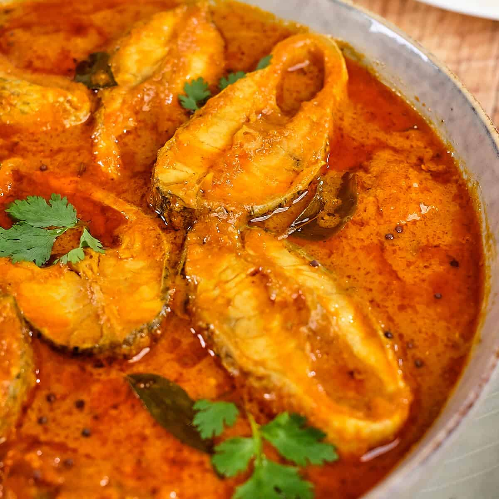

Our Dishes

Paneer Butter Masala
- One of the most loved dishes among hostel students when they miss “ghar ka khana.”
- Creamy, buttery, and filling — a perfect break from regular hostel mess food.
- Pairs well with chapati or rice, making it a comforting weekend treat.
- A dish students often look forward to on “special menu” days in the hostel mess.
- Brings a taste of restaurant-style food right to the hostel dining hall.
- A favorite choice for birthday treats or hostel celebrations with friends

Chicken Biryani
- A royal dish that instantly upgrades the hostel mess menu to a feast.
- Fragrant basmati rice layered with juicy chicken and spices.
- Perfect one-pot meal — filling and satisfying for hungry hostel nights.
- Students eagerly wait for “Biryani Day” in the mess schedule.
- Often shared among friends, making it a dish of bonding and celebration.
- A hostel favorite for Sunday lunch or festive occasions.
Veg Noodles
- A quick and tasty favorite among hostel students for evening snacks.
- Loaded with vegetables, making it both delicious and filling.
- Easy to eat and share — perfect for late-night group study sessions.
- Brings street-food vibes straight into the hostel mess.
- Often the first choice when students crave something spicy and tangy.
- A budget-friendly dish that never fails to satisfy hostel cravings.

Fish Curry
- A comforting dish that reminds coastal students of home-cooked meals.
- Rich, tangy, and spicy — perfect with hot steamed rice in the hostel mess.
- Brings a welcome change from the usual chicken or paneer dishes.
- Often seen as a “special treat” on weekends or festive days in hostels.
- Its homely flavor makes students feel less homesick during hostel life.
- A favorite for those who crave authentic traditional taste even away from home.

Punjabi Mutton Curry
- A rich and spicy curry that hostel students eagerly look forward to.
- Slow-cooked mutton with Punjabi spices makes it flavorful and hearty.
- Perfect with naan or rice, making weekend meals extra special in the hostel.
- Often seen as a “luxury dish” in the mess, usually served on festive occasions.
- Fills the hostel dining hall with irresistible aroma and excitement.
- A favorite among non-veg lovers craving a homestyle Punjabi taste.

Gulab Jamun
- The most loved sweet dish among hostel students during celebrations.
- Soft, spongy, and soaked in sugar syrup — a perfect end to any meal.
- Usually served in the mess on festivals, birthdays, or special dinners.
- Brings a smile to every student’s face after a long tiring day.
- A symbol of hostel bonding — often shared with friends in groups.
- Gives hostel food a festive and homely touch instantly.